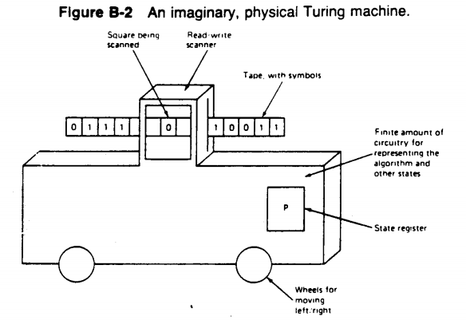
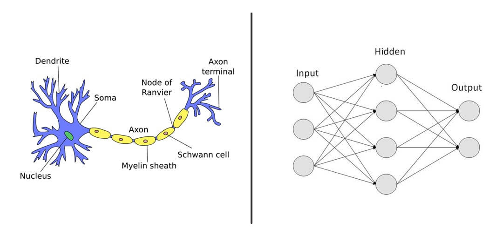
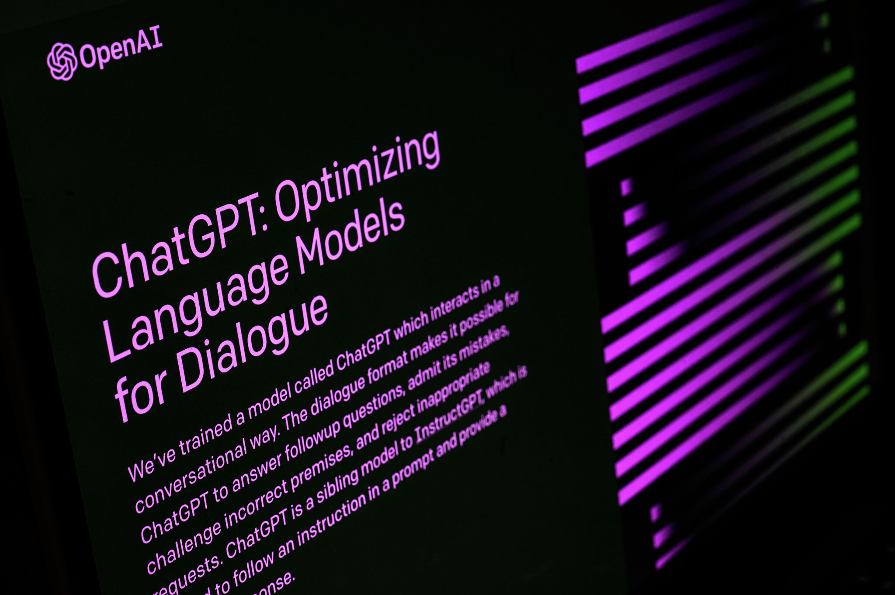
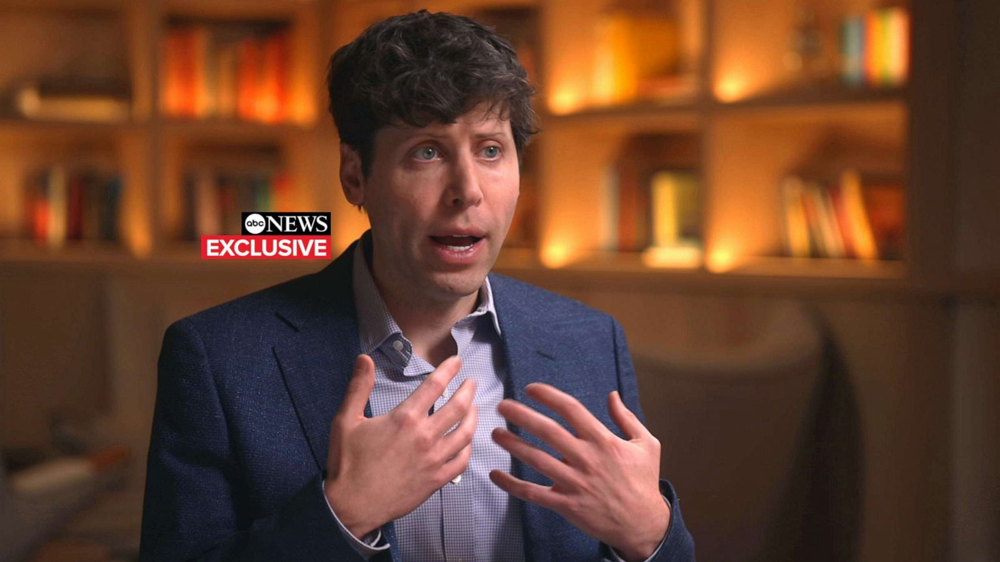
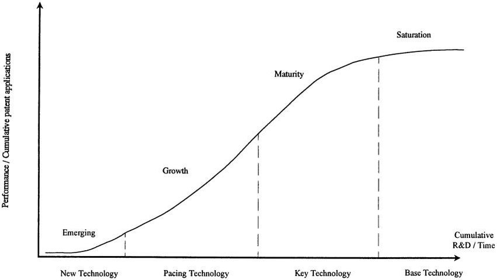

Taking a stance on the tech information that matters.
Our Next Generation
The Potential of Computerised Intelligence
Key Points
Imagine a world where computers can outperform even the most intelligent humans, where our technology can develop original and vastly detailed solutions to real-world problems, solving battles we have been at war in for tens of years. This future is near, but this venture has a complex journey.
Ever since the dawn of humanity, we have been surrounded by resources and materials to build the next generation of technology. As a result, we have rampantly accelerated our growth over the past century into a world no person could imagine endeavouring, pungent with the collective ideas by the minds of millions, expedited by the motives of civilisation.
The ‘Turing machine’, conceptualised in the 1930s, is a significant mathematical model influencing our technological advancement. These models can perform any algorithm represented by ones and zeroes on an infinitely long tape. With the help of this model, today's computation hardware is referred to as ‘Turing complete’, meaning it can simulate a Turing machine and complete any calculation given enough time and memory.
The Turing machine, named after Alan Turing, is one of the fundamental mathematical models of computer science.
Nevertheless, why is this important to know? This is because, with our knowledge of Turing machines, computers are technically capable of making decisions for themselves, considering any given Turing complete machine can perform any algorithm or calculation.
Therefore, as computers became more widespread, cheaper, and accessible throughout the mid-1900s, the first steps into what we know today as artificial intelligence was sparked. Through this knowledge, computer scientists and mathematicians developed hundreds of algorithms resembling computational intelligence, where computers could make logical decisions using concepts such as evaluation and simulation. A prime example of this emerging technology was in 1997 when the first computer beat Grandmaster Garry Kasparov in a chess game.

The chess battle between Grandmaster Garry Kasparov and artificial intelligence 'Deep Blue'.
Continued development into machine learning and reinforcement later proved computers’ learning abilities, resembling ‘neural networks’ like a human brain. However, this technology has only continued to grow since then, with, in recent years, companies and entities producing numbers of large language models and neural networks for a wide variety of purposes.
Left: Human neuron, right: artificial neural network. A neural network represents data similar to the human brain cell.
Today, many companies worldwide have been revolutionising their technical ability by incorporating artificial intelligence into their workflows. From previously mentioned language models and massively growing applications such as OpenAI’s ChatGPT to AI tools such as DALL-E, ElevenLabs, and GitHub Copilot, artificial intelligence has taken the world by storm over the past year.
This exponential rise in the popularity of generative AI tools has been the pinnacle of artificial intelligence technologies for the media. It has resulted in what we recognise as the ‘AI boom’, and many of these large language models are extraordinarily powerful. Moreover, they can generate work humans cannot produce in various contexts, including AI-generated text, audio, images, art, and computer code.
OpenAI's ChatGPT has gained 100 million active monthly users in only two months.
As a result, various ethical and safety concerns have arisen from developing these generative AI tools concerning inappropriate, unethical, or antagonistic opinions that can be generated. Furthermore, based on their training data, these dangerously implemented models can generate misinformation and propaganda, including strongly biased political views and language characterised by prejudice and discrimination. In a recent interview with OpenAI’s CEO Sam Altman, Altman expressed his concerns regarding generative AI technology, stating that “we aren’t going to be the only creator of this technology”, indicating that the world is trying to push forward with this innovation.
OpenAI CEO Sam Altman at a recent ABC News interview.
For context, OpenAI has been leading the generative AI industry for years and has taken proper safety steps to limit any dangerous usage of its models. However, as these technologies become more widespread, similar to the world-famous ‘dot-com bubble’, people can quickly implement generative AI systems without these protective filters or safeguards.
Nevertheless, this should encourage us to pursue the AI industry, as there are still reasons against these potential drawbacks. Artificial intelligence as we know it is going through a cycle of early integration. With any new and developing technology, adaptation to include these innovations in our workflow becomes lengthy and complicated, as we have yet to establish any solid ground for implementing these systems. For reference, we are already attempting to integrate these generative technologies into our products, which include AI assistants, virtual agents, and automation, spanning into the public space with products such as ChatGPT and Google Bard AI.
Any new emerging technology must go through a gradual integration process, which correlates the amount of research and development to a particular technology's performance in the real world. Therefore, promoting the education of AI systems will increase the number of developers working in this field and allow the public to make better-informed decisions about integrating these technologies, especially when these technologies are often regarded as dangerous but have extraordinary potential.
The technology “s-curve” relates to the integration performance of technologies over time.
A time in the future may arise when artificial intelligence systems revolutionise job industries and toolsets. In essence, this makes the base knowledge for us to know how to interact with these AI systems, such as prompt engineering or development, fundamental skills. Therefore, to continue integrating AI systems, we must start teaching these constructs to promote integrity in industries planned to be assisted by these emerging AI technologies.
These systems have plenty of potential in our society, and we need as much help as possible to bring this technology to life. The future is undefined but exciting, and we must prepare for its imminency.